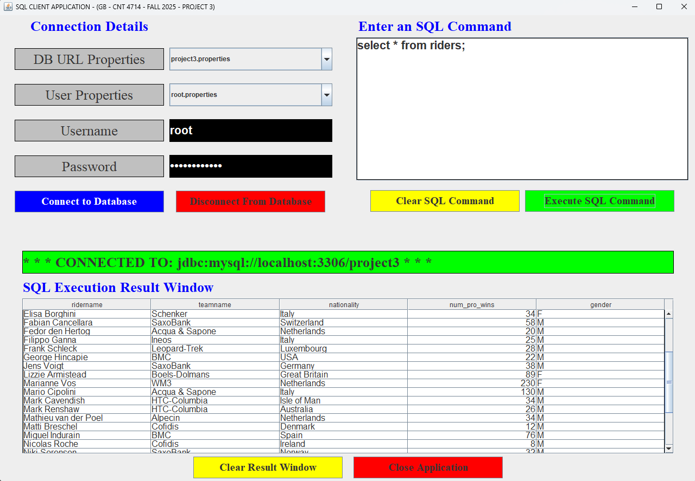

This project required the use of MySQL and JDBC. The goal was to create a GUI that allowed for user input and was connected to an SQL backend. JDBC was used to connect the Java GUI front-end with the SQL Database. Depending on the user permissions, they could interact with the GUI in different ways and perform different SQL commands. There is the root user, client-1, client-2, and the accountant.

This project builds on my GUI Event Driven Programming project. It follows the same design language for GUI creation, including the use of action listeners and event handlers, but adds more. It incorporates the use of a MySQL backend database, and relies on JDBC to connect them together. This was challenging, but it introduced me to two-tier server architecture that allowed me to seamlessly connect the front-end and back-end together.
This download contains a zip of my submission, including the source code and
a Microsoft Word document containing more screenshots of the program.
This was originally submitted as schoolwork, so the name of the source code is Project 3.
NOTE: I have included some of the additional SQL files written by my professor, Professor Mark Llewellyn. This is not my work but will be required
for the GUI to function in conjuction with the MySQL database. It also includes lists of commands each user can type to verify results.